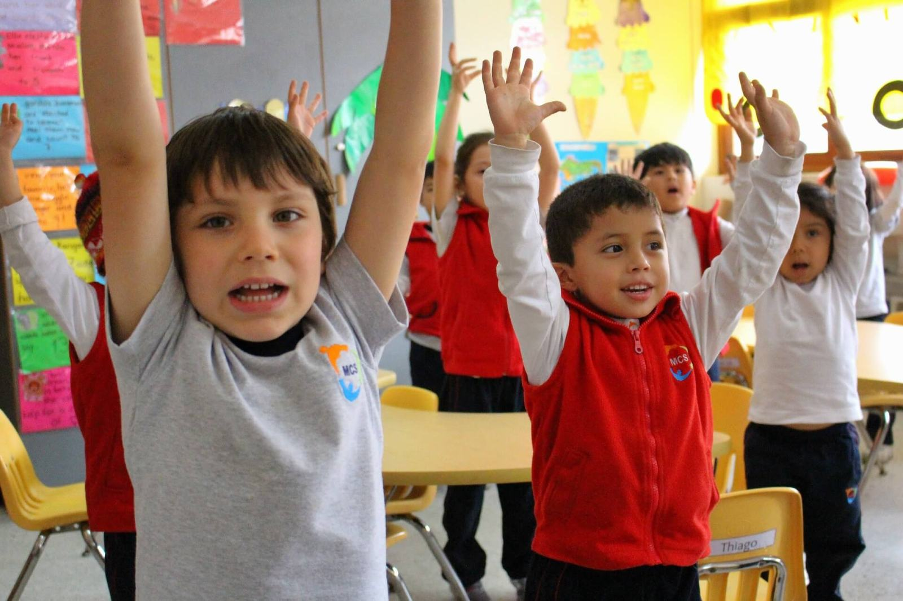

Principios | Filosofía
Creemos que los principios cristianos son los más acertados para que nuestros estudiantes puedan crecer como personas íntegras, capaces de enfrentar los retos del presente y del futuro.
Es nuestra convicción formar un modelo de hombre responsable delante de Dios, consigo mismo, con su familia y su sociedad.
En Monterrico Christian School se inculcan cinco principios que consideramos son los más importantes para una sana convivencia, estos son enseñados y reforzados de forma consistente durante la permanencia de nuestros estudiantes en MCS.
Amor a Dios y al prójimo
Amarás al Señor tu Dios con todo tu corazón, y con toda tu alma, y con toda tu mente. Este es el primero y grande mandamiento. Y el segundo es semejante: Amarás a tu prójimo como a ti mismo.
Mateo 22:37-39
Respeto a la autoridad
Sométase toda persona a las autoridades superiores; porque no hay autoridad sino de parte de Dios, y las que hay, por Dios han sido establecidas.
Romanos 13:1
Responsabilidad
Y todo lo que hacéis, sea de palabra o de hecho, hacedlo todo en el nombre del Señor Jesús, dando gracias a Dios Padre por medio de él. Y todo lo que hagáis, hacedlo de corazón, como para el Señor y no para los hombres.
Colosenses 3:17, 23
Integridad
Integridad y rectitud me guarden, porque en ti he esperado.
Salmo 25:21
Sed por aprender
Oirá el sabio, y aumentará el saber, y el entendido adquirirá consejo. El principio de la sabiduría es el temor de Jehová; los insensatos desprecian la sabiduría y la enseñanza.
Proverbios 1:5, 7
Filosofía
La filosofía de nuestra institución se basa en la visión teocéntrica en la que toda verdad es la verdad de Dios y la Biblia, que es inspirada por Él, es la única infalible y autorizada Palabra de Dios que contiene dicha verdad.
Dios creó todas las cosas y estas son sostenidas por Él, por lo tanto, el universo y la humanidad están dinámicamente relacionadas con Dios y tienen el propósito de glorificarle. Debido a que los seres humanos somos pecadores por naturaleza y elección, esto nos impide conocer y glorificar a Dios.
Una persona puede hacer esto solamente al aceptar el regalo gratuito de Dios, que es la salvación a través de Su Hijo Jesucristo.
Nuestra filosofía se basa en una educación sustentada en principios cristianos, permitiendo a los alumnos desarrollarse íntegramente como personas.
Nuestro objetivo es usar la verdad que Dios ha revelado a través de la naturaleza y Su Palabra, la cual es provechosa para la enseñanza, la disciplina, la corrección e instrucción en justicia.
Esta filosofía encauza nuestra energía para promover altos estándares académicos al tiempo que ayudamos a nuestros alumnos a alcanzar destrezas en el pensamiento crítico y creativo, usando una variedad de materiales curriculares.
Esta filosofía implica una estrecha cooperación con los padres en cada fase del desarrollo de los alumnos, ofreciéndoles asistencia para entender los propósitos de la escuela cristiana.
Colaborando en la formación de vidas íntegras